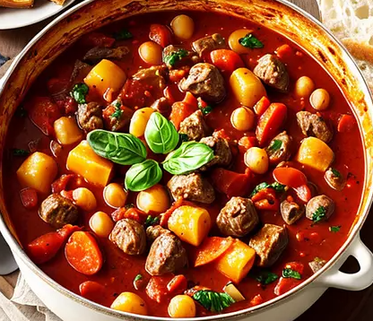

<！DOCTYPE html>
<html>
<head>
<title>文字+圖片操作</title>
</head>
<body bgcolor="B9B9FF">
<h1 align="center">文字+圖片操作 學號91034121 姓名:朱哲輝</h1>
<table border ="0px">
<tr>
<td></td>
<td></td>
<td></td>
<td></td>
</tr>
<tr>
<td align="center"><a href="index.html">義大利燉飯</a></td>
<td align="center"><a href="2dex.html">墨西哥玉米濃湯</a></td>
<td align="center"><a href="3dex.html">芋頭西米露</a></td>
<td align="center"><a href="4dex.html">糖醋排骨</a></td>
</tr>
</table>
<h2>義大利燉飯</h2>
<table border ="3px">
<tr>

<th>食材</th>
<td>義大利瑞斯圭米 300 克</td>
<td>洋蔥、蒜 1顆</td>
<td>白酒1/2 杯</td>
<td>高湯4 杯</td>
<td>帕瑪森芝士 1/2 杯</td>
<td>奶油 2 湯匙</td>
<td>橄欖油2 湯匙<</td>
<td>鹽、黑胡椒</td>
新鮮香草</td>
</tr>
</table>

<h3>做法<h3>
<ol>
<li>將洋蔥和蒜爆香，加入瑞斯圭米拌炒。<li>
<li>逐漸加入高湯和白酒，不斷攪拌至吸收，直到米飯煮熟。<li>
<li>最後加入奶油、帕瑪森芝士，調味鹽和黑胡椒，灑上新鮮香草。</li>
</ol>


</body>
</html>

